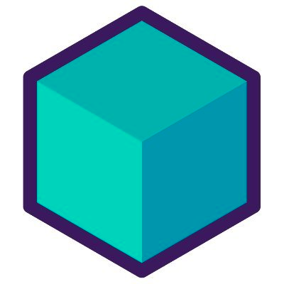

How to use Testcontainers with integration tests
How to use Testcontainers with integration tests

Testing
One of the key tasks in software development is testing.
Test Levels
According to the test levels pyramid of Mike Cohn; there are 3 main levels:
- Unit Test
- Integration Test
- UI Test
Test pyramid

Integration test
Unit tests as a basis, and integration tests to verify interaction with external components outside the business logic.
Testcontainers
Testcontainers is a java library that we can use to run different testing frameworks (as JUnit or Spock) with docker containers. Docker as a developer tool, allows us to create easily environments with all its dependencies; they are light and runs quickly and, also are portable.
Not only Java
There are implementations for Go, dotNet, Python, Node, and Rust.
Modules
- Databases (SQL, NoSQL)
- Cloud (AWS using localstack, Azure, GCloud)
- Kafka, MockServer, Solr, Vault…
- GenericContainers
Requirements for based applications
- Docker
- junit-jupiter for JUnit 5.
@nnotations
@Testcontainers: This annotation handles automatically the container’s lifecycle. It is in charge of start-up and closed-up every container in our tests.@Container: Marks containers to be managed by the Testcontainers extension.
Demo time!
Conclusions 1/2
Working with Testcontainers doesn’t require a lot of setup.
The
withTmpFsoption allows us to map the container volume to our host memory.If we want to speed up our integration tests we can declare containers as static fields to share between tests. In our case, our test run on an average bellow to 150ms.
Conclusions 2/2
Testcontainers provides the benefit of 100% database compatibility (since it runs a real database inside a container).
The database always starts in a known state, without contamination between test runs.
More info
Juan Moreno
Twitter: @JuanMorenoDev
Presentation link: https://bit.ly/testcontainers-careerday-2023